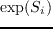

Next: Optimal sequences with 20 Up: Finding the GMEC Previous: CPU and memory limits
|
[width=10cm]errors.pdf
|
As a second series of tests, we chose randomly for each protein a set of 10 positions to design; the other positions had fixed types but explored all possible rotamers. The selected positions were close by in the protein structure. For each protein, we made five separate choices of positions to design, for a total of 45 test cases. The CFN, heuristic, and MC methods were run for all 45 cases; REMC was run only when MC gave a poor result (6 cases, involving 5 proteins). Results are summarized in Fig. 4.6 and table 4.5. Twenty cases where all methods found the GMEC are not listed in the table, leaving 25 where at least one method did not find the GMEC. CFN performed very well: only in one case did it not find the GMEC. The lowest energy was sampled in this case with the heuristic, and the best CFN energy was 5.7 kcal/mol higher (despite using the more aggressive CFN protocol). With a third, more recent CFN protocol [#!Simoncini15!#], this result did not change.
The heuristic performed about as well as CFN for 10-position design. In one case, CFN did not find the GMEC and the heuristic gave the lowest energy (2BYG-1). In 39 cases, the heuristic found the GMEC. In three cases, it was within 0.15 kcal/mol of the GMEC, with no mutations (only rotamer differences). In one case (1CKA-5), it was 0.29 kcal/mol above the GMEC, with no mutations. Tripling the number of heuristic cycles allowed the GMEC to be reached (within 0.07 kcal/mol) in all these cases, with run times below 6 h. There was only one real failure, 1M61-2, where the best heuristic solution was 3.5 kcal/mol above the GMEC, with three mutations relative to the GMEC. For this case, the GMEC was recovered (within 0.01 kcal/mol) if the number of cycles was increased to 990,000, for a run time of 7 h. Switching from the heuristic structure (after 330,000 cycles) to the GMEC requires concerted changes in 3 adjacent sidechain positions. This is only possible during a heuristic cycle if there is a downhill, connecting pathway made of single position changes, which is evidently very rare for this particular test. Thus, the heuristic method can only find the GMEC if it draws the right combination of types/rotamers at the very beginning of a cycle; hence the need for 990,000 cycles.
|
rotamers |
length |
Protein | CFN | Heur. | MC | REMC | |
| 2991 | 108(17) | 1A81 3 | gmec | 0.001 | 0.1595 | ||
| 1A81 4 | gmec | 0. | 0.0317 | ||||
| 1A81 5 | gmec | 0. | 0.0563 | ||||
| 2520 | 58(8) | 1ABO 1 | gmec | 0.0675 | 0.9054 | 0.8041 | |
| 1ABO 4 | gmec | 0. | 0.0128 | ||||
| 2957 | 98(10) | 1BM2 1 | gmec | 0. | 0.0950 | ||
| 1BM2 5 | gmec | 0. | 0.1082 | ||||
| 2508 | 57(8) | 1CKA 5 | gmec | 0.2859 | 3.2525 | 0. | |
| 2819 | 91(15) | 1G9O 3 | gmec | 0.1366 | 0.1366 | ||
| 1G9O 5 | gmec | 0. | 3.9599 | 0. | |||
| 2957 | 109(21) | 1M61 1 | gmec | 0. | 0.0776 | ||
| 1M61 2 | gmec | 3.5105 | 4.5062 | 0.3215 | |||
| 1M61 5 | gmec | 0. | 0.0432 | ||||
| 3037 | 104(8) | 1O4C 1 | gmec | 0. | 0.1121 | ||
| 1O4C 2 | gmec | 0. | 0.1046 | ||||
| 1O4C 3 | gmec | 0. | 0.1519 | ||||
| 1O4C 4 | gmec | 0. | 0.1545 | ||||
| 1O4C 5 | gmec | 0. | 0.1753 | ||||
| 2773 | 82(10) | 1R6J 1 | gmec | 0. | 2.4022 | 0.3986 | |
| 1R6J 2 | gmec | 0. | 1.0398 | 0.3049 | |||
| 1R6J 3 | gmec | 0. | 0.0106 | ||||
| 1R6J 5 | gmec | 0. | 0.0162 | ||||
| 2888 | 97(15) | 2BYG 1 | 5.7485 | 0. | 0.0337 | ||
| 2BYG 3 | gmec | 0. | 0.0833 | ||||
| 2BYG 4 | gmec | 0. | 0.2149 |
Plain MC did slightly less well for 10-position design. In 21 cases, it found the GMEC. In 18 cases, its best sequence was within 0.2 kcal/mol of the GMEC, with 0-3 mutations (one on average). Notice that 0.2 kcal/mol is the thermal energy for the MC protocol used. In six cases, its best sequence was between 0.9 and 4.5 kcal/mol above the GMEC, with 2-7 mutations (3 on average). For these six cases, REMC was run, and sampled sequences within 0.40 kcal/mol of the GMEC, except for one case where its best sequence was 0.80 kcal/mol above the GMEC. Overall, MC or REMC reached the GMEC to within 0.40 kcal/mol in all but one case. A 0.40 kcal/mol energy difference is actually less than the average pairwise additivity errors in the energy function [#!Lopes07!#,#!Schmidt08b!#,#!Gaillard14!#], and so one might consider this performance to be about as good as the CFN and heuristic methods. In terms of speed, for 10-position design, all the methods were comparable (a few hours per run on average).
mignon 2017-11-30